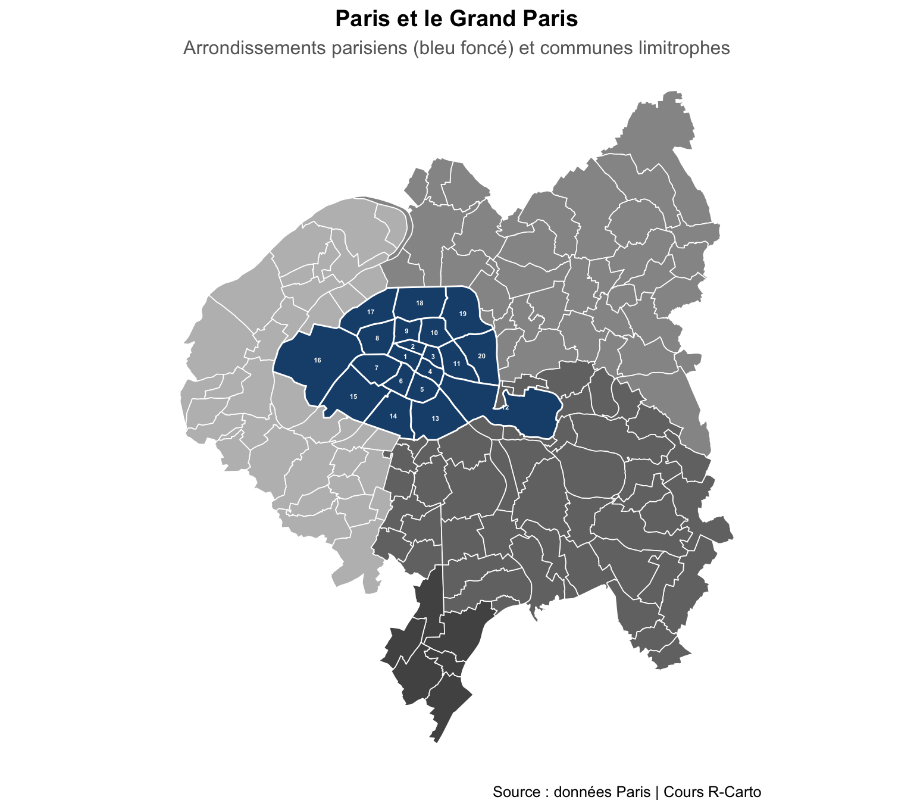
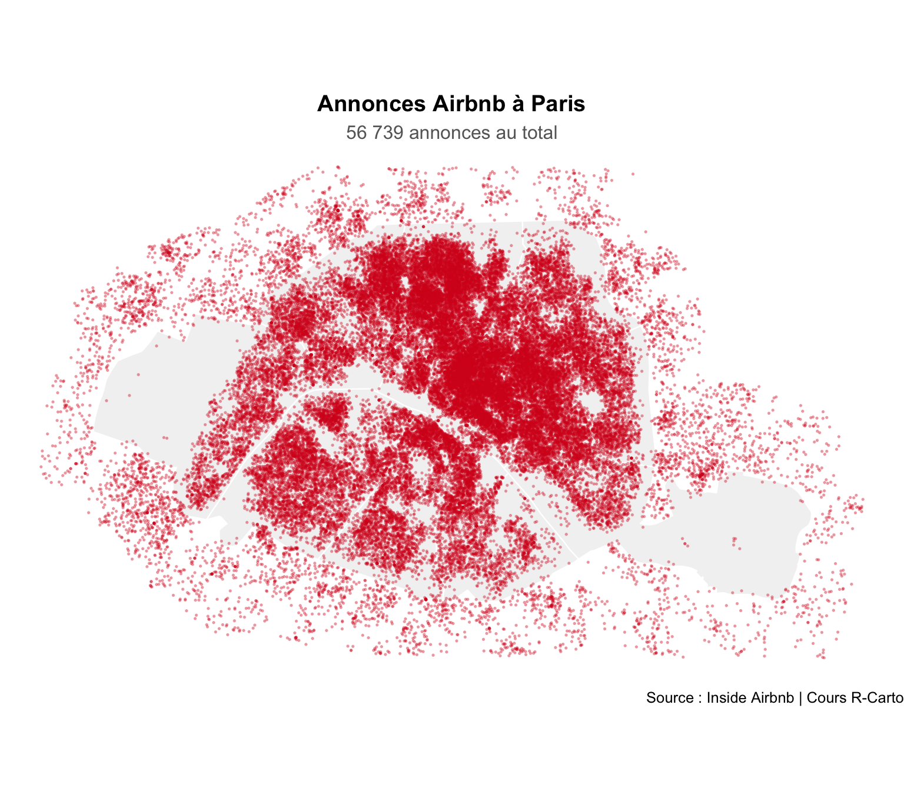
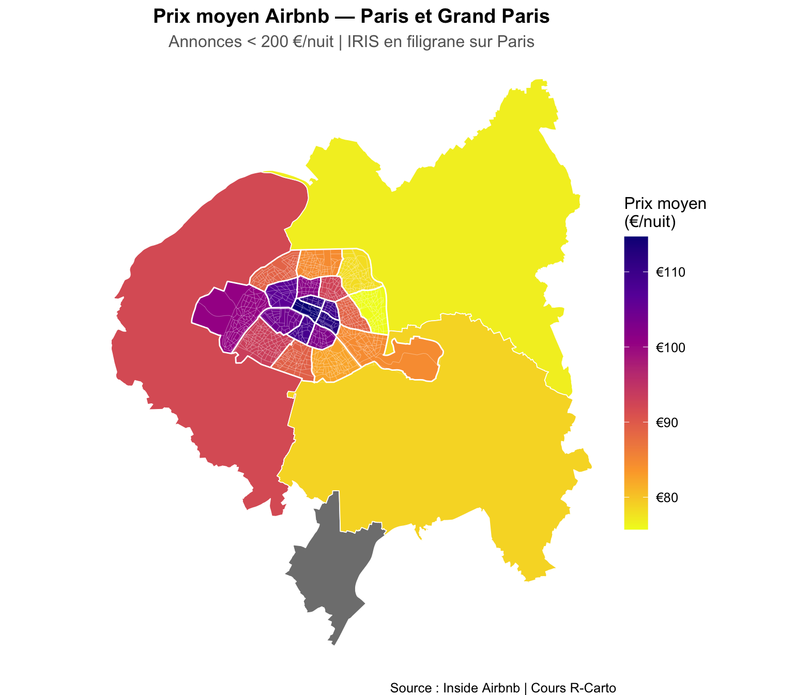
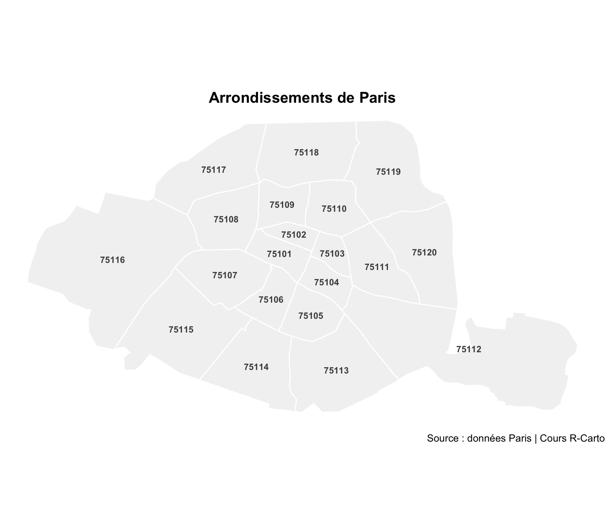
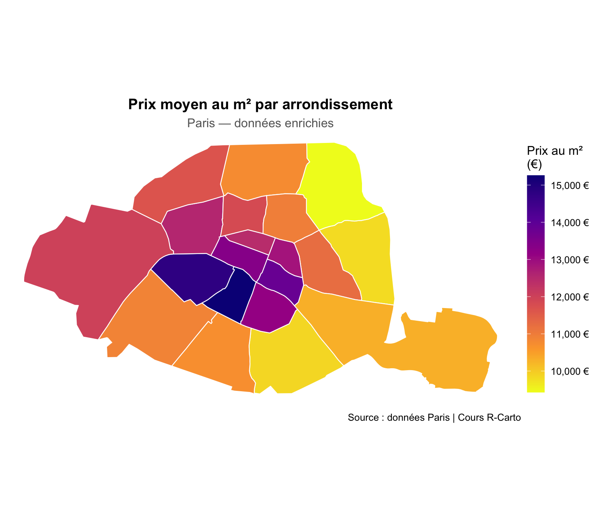
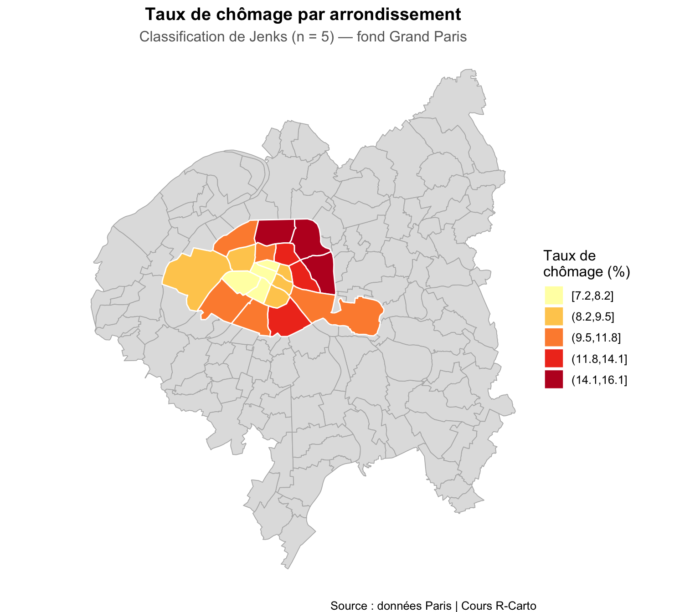
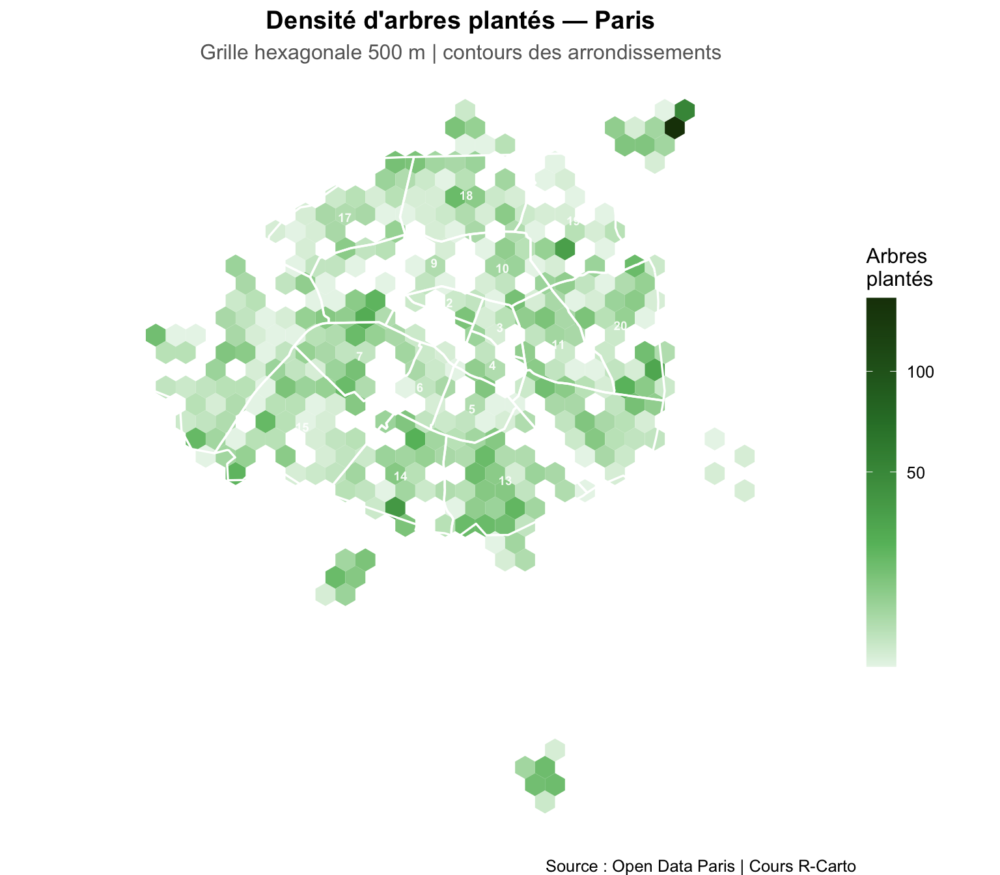

Code
library(sf)
library(ggplot2)
library(dplyr)
library(viridis)
library(scales)
library(ggspatial)
library(classInt)
Dans le chapitre précédent, vous avez appliqué les opérations de géotraitement à Londres : charger des données, les spatialiser, les joindre et les cartographier. Il est maintenant temps de reproduire ces étapes pour Paris, avec de vraies données socio-économiques par arrondissement.
Vous disposez de :
arrondiss_lambert.shp)donnees_arrondissement_enrichi.csv) avec des données socio-économiques par arrondissement| Opération | Fonction |
|---|---|
| Lire un shapefile | read_sf("chemin/fichier.shp") |
| Vérifier le SCR | st_crs(objet)$srid |
| Reprojeter | st_transform(objet, 2154) |
| Spatialiser un CSV | st_as_sf(df, coords = c(lon, lat)) |
| Jointure attributaire | left_join(x, y, by = ...) |
| Jointure spatiale | st_join(polygones, points) |
| Agréger | group_by() |> summarise() |
library(sf)
library(ggplot2)
library(dplyr)
library(viridis)
library(scales)
library(ggspatial)
library(classInt)Chargez le shapefile des arrondissements et des communes du Grand Paris, vérifiez leurs SCR et reprojetez en Lambert-93.
PA <- read_sf("data/Paris/Polygons/arrondiss_lambert.shp")
GrandParis <- read_sf("data/Paris/Polygons/communes_grandsparis.shp")
# Vérifier les SCR
st_crs(PA)$srid
st_crs(GrandParis)$srid
# Reprojeter les deux en Lambert-93
PA <- st_transform(___, ___)
GrandParis <- st_transform(___, ___)PA <- read_sf("data/Paris/Polygons/arrondiss_lambert.shp")
GrandParis <- read_sf("data/Paris/Polygons/communes_grandsparis.shp")
PA <- st_transform(PA, 2154)
GrandParis <- st_transform(GrandParis, 2154)
# Visualisation
ggplot() +
geom_sf(data = GrandParis, aes(fill = as.factor(C_DEP)),
color = "white", linewidth = 0.3, show.legend = FALSE) +
scale_fill_manual(values = c("75" = "#d9d9d9", "92" = "#bdbdbd",
"93" = "#969696", "94" = "#737373",
"91" = "#525252")) +
geom_sf(data = PA, fill = "#1a4f7a", color = "white", linewidth = 0.5) +
geom_sf_text(data = PA, aes(label = c_ar),
fun.geometry = sf::st_centroid,
size = 1.5, color = "white", fontface = "bold") +
labs(
title = "Paris et le Grand Paris",
subtitle = "Arrondissements parisiens (bleu foncé) et communes limitrophes",
caption = "Source : données Paris | Cours R-Carto"
) +
theme_void(base_size = 12) +
theme(
plot.title = element_text(face = "bold", hjust = 0.5),
plot.subtitle = element_text(color = "grey40", hjust = 0.5)
)
Le fichier listings.csv contient les annonces Airbnb parisiennes avec leurs coordonnées. Nous allons reproduire exactement la même chaîne d’opérations qu’avec les ventes immobilières à Londres, en décomposant chaque étape.
| Étape | Opération | Fonction |
|---|---|---|
| 1 | Lire le CSV | read.csv() |
| 2 | Identifier les colonnes lon/lat | names() / head() |
| 3 | Convertir en objet sf | st_as_sf() |
| 4 | Déclarer le SCR (WGS84) | st_set_crs(4326) |
| 5 | Reprojeter comme les arrondissements | st_transform() |
| 6 | Filtrer | filter() |
| 7 | Jointure spatiale | st_join() |
| 8 | Agréger | group_by() \|> summarise() |
| 9 | Cartographier | ggplot() + geom_sf() |
listings.csvAvant d’écrire une seule ligne de code spatial, on explore toujours le CSV brut pour repérer les colonnes de coordonnées.
# Étape 1 : lire le fichier
airbnb <- read.csv("data/Paris/airbnb/listings.csv")
# Étape 2 : explorer avant de spatialiser
# names() liste toutes les colonnes — repérez longitude et latitude
names(airbnb)
head(airbnb, 3)
# Dans listings.csv :
# colonne 8 → longitude (direction est-ouest)
# colonne 7 → latitude (direction nord-sud)
# ATTENTION : st_as_sf() attend toujours LONGITUDE avant LATITUDE → c(8, 7)
# Étape 3 : convertir en objet sf
airbnb_sf <- st_as_sf(airbnb, coords = c(___, ___))
# Étape 4 : déclarer le SCR — les coordonnées GPS sont toujours en WGS84
# st_set_crs() DÉCLARE sans modifier les coordonnées
airbnb_sf <- st_set_crs(airbnb_sf, ___)
# Étape 5 : reprojeter dans le même SCR que PA
# st_crs(PA) récupère automatiquement le SCR de PA — plus robuste que d'écrire 2154 en dur
airbnb_sf <- st_transform(airbnb_sf, st_crs(PA))
# Vérification : les deux couches sont-elles maintenant dans le même SCR ?
st_crs(airbnb_sf) == st_crs(PA) # doit renvoyer TRUELes étapes 3, 4 et 5 peuvent s’enchaîner en un seul pipe :
airbnb_sf <- st_as_sf(airbnb, coords = c(8, 7)) |>
st_set_crs(4326) |>
st_transform(st_crs(PA))# Étape 1 : lire
airbnb <- read.csv("data/Paris/airbnb/listings.csv")
# Étapes 2–5 : explorer, convertir, déclarer, reprojeter
cat("Colonnes lon/lat :", names(airbnb)[c(8, 7)], "\n")Colonnes lon/lat : longitude latitude cat("Nombre d'annonces :", nrow(airbnb), "\n")Nombre d'annonces : 56739 airbnb_sf <- st_as_sf(airbnb, coords = c(8, 7)) |>
st_set_crs(4326) |>
st_transform(st_crs(PA))
# Vérification
st_crs(airbnb_sf) == st_crs(PA)[1] TRUE# Visualisation — size et alpha petits car beaucoup de points
ggplot() +
geom_sf(data = PA, fill = "grey95", color = "white", linewidth = 0.4) +
geom_sf(data = airbnb_sf, color = "#d7191c", size = 0.3, alpha = 0.3) +
labs(
title = "Annonces Airbnb à Paris",
subtitle = paste0(format(nrow(airbnb_sf), big.mark = " "), " annonces au total"),
caption = "Source : Inside Airbnb | Cours R-Carto"
) +
theme_void(base_size = 12) +
theme(
plot.title = element_text(face = "bold", hjust = 0.5),
plot.subtitle = element_text(color = "grey40", hjust = 0.5)
)
On exclut les annonces très chères, puis on associe chaque annonce à son arrondissement via une jointure spatiale, avant d’agréger.
st_join() est crucial
st_join(polygones, points) — le premier argument détermine la structure géométrique du résultat. En mettant PA en premier, le résultat est un objet avec les géométries des arrondissements, enrichi des attributs des annonces qui y tombent — ce dont on a besoin pour agréger ensuite par arrondissement.
# Étape 6 : filtrer — garder les annonces < 200 €/nuit
airbnb_filtre <- filter(airbnb_sf, price < ___)
cat("Annonces conservées :", nrow(airbnb_filtre), "sur", nrow(airbnb_sf), "\n")
# Étape 7 : jointure spatiale
# Chaque polygone hérite des attributs de tous les points qu'il contient.
# Résultat : plusieurs lignes par arrondissement (une par annonce).
airbnb_PA <- st_join(___, ___) # arrondissements parisiens × annonces
airbnb_GP <- st_join(___, ___) # communes Grand Paris × annonces
cat("Lignes après jointure :", nrow(airbnb_PA), "(>> nrow(PA) =", nrow(PA), ")\n")
# Étape 8 : agréger
# group_by() + summarise() condense en une ligne par arrondissement.
# .groups = "drop" supprime le groupement après summarise (bonne pratique).
airbnb_agg <- airbnb_PA |>
group_by(c_arinsee, l_aroff) |>
summarise(
nb_annonces = n(),
prix_moyen = mean(___, na.rm = TRUE),
.groups = "drop"
)
cat("Lignes après agrégation :", nrow(airbnb_agg), "(= nrow(PA) =", nrow(PA), ")\n")
head(airbnb_agg)# Étape 6 : filtrer
airbnb_filtre <- filter(airbnb_sf, price < 200)
cat("Annonces conservées :", nrow(airbnb_filtre), "sur", nrow(airbnb_sf), "\n")Annonces conservées : 46157 sur 56739 # Étape 7 : jointure spatiale (Paris + Grand Paris)
airbnb_PA <- st_join(PA, airbnb_filtre)
airbnb_GP <- st_join(GrandParis, airbnb_filtre)
cat("Lignes après jointure :", nrow(airbnb_PA), "(>> nrow(PA) =", nrow(PA), ")\n")Lignes après jointure : 40571 (>> nrow(PA) = 20 )# Étape 8 : agréger — arrondissements
airbnb_agg <- airbnb_PA |>
group_by(c_arinsee, l_aroff) |>
summarise(
nb_annonces = n(),
prix_moyen = mean(price, na.rm = TRUE),
.groups = "drop"
)
# Étape 8 : agréger — Grand Paris
airbnb_gp_agg <- airbnb_GP |>
group_by(C_DEP) |>
summarise(
nb_annonces = n(),
prix_moyen = mean(price, na.rm = TRUE),
.groups = "drop"
)
cat("Lignes après agrégation :", nrow(airbnb_agg), "(= nrow(PA) =", nrow(PA), ")\n")Lignes après agrégation : 20 (= nrow(PA) = 20 )airbnb_agg |>
st_drop_geometry() |>
select(l_aroff, nb_annonces, prix_moyen) |>
arrange(desc(prix_moyen)) |>
head(8) |>
knitr::kable(digits = 0,
caption = "Arrondissements classés par prix Airbnb moyen")| l_aroff | nb_annonces | prix_moyen |
|---|---|---|
| Louvre | 633 | 115 |
| Hôtel-de-Ville | 1117 | 112 |
| Bourse | 1155 | 111 |
| Temple | 1566 | 109 |
| Luxembourg | 964 | 109 |
| Élysée | 801 | 106 |
| Palais-Bourbon | 886 | 104 |
| Panthéon | 1277 | 103 |
On superpose trois couches : le Grand Paris en fond, les arrondissements avec leurs prix, et les IRIS en filigrane pour montrer la structure interne de Paris.
limits = prix_range ?
Sans limits, ggplot2 calcule une échelle de couleur séparée pour chaque geom_sf(). La même valeur (ex. 90 €) aurait une couleur différente dans le Grand Paris et dans les arrondissements. limits = prix_range force les deux couches à partager la même échelle — indispensable pour une lecture cohérente.
iris <- read_sf("data/Paris/Polygons/iris.shp") |>
filter(dep == "75") |>
st_transform(2154)
# Calculer l'étendue commune des prix pour harmoniser la palette
prix_range <- range(c(airbnb_agg$prix_moyen, airbnb_gp_agg$prix_moyen), na.rm = TRUE)
ggplot() +
# Couche 1 : Grand Paris en fond (dessiné en premier = en dessous)
geom_sf(data = ___, aes(fill = prix_moyen),
color = "white", linewidth = 0.3) +
# Couche 2 : arrondissements par-dessus
geom_sf(data = ___, aes(fill = ___),
color = "white", linewidth = 0.5) +
scale_fill_viridis_c(
"Prix moyen\n(€/nuit)",
direction = -1,
limits = prix_range, # même échelle pour les deux couches
labels = label_dollar(prefix = "€"),
option = "___" # essayez "plasma", "magma", "inferno"
) +
# Couche 3 : IRIS en filigrane (fill = NA = transparent, juste le contour)
geom_sf(data = iris, fill = NA,
color = alpha("white", ___), linewidth = 0.12) + # essayez 0.2 à 0.5
labs(title = "___", subtitle = "___", caption = "___") +
theme_void()iris <- read_sf("data/Paris/Polygons/iris.shp") |>
filter(dep == "75") |>
st_transform(2154)
prix_range <- range(c(airbnb_agg$prix_moyen, airbnb_gp_agg$prix_moyen), na.rm = TRUE)
ggplot() +
# Couche 1 : Grand Paris en fond
geom_sf(data = airbnb_gp_agg, aes(fill = prix_moyen),
color = "white", linewidth = 0.3) +
# Couche 2 : arrondissements parisiens
geom_sf(data = airbnb_agg, aes(fill = prix_moyen),
color = "white", linewidth = 0.5) +
scale_fill_viridis_c(
"Prix moyen\n(€/nuit)",
direction = -1,
limits = prix_range,
labels = label_dollar(prefix = "€"),
option = "plasma"
) +
# Couche 3 : IRIS en filigrane — alpha faible pour ne pas surcharger
geom_sf(data = iris, fill = NA,
color = alpha("white", 0.3), linewidth = 0.12) +
labs(
title = "Prix moyen Airbnb — Paris et Grand Paris",
subtitle = "Annonces < 200 €/nuit | IRIS en filigrane sur Paris",
caption = "Source : Inside Airbnb | Cours R-Carto"
) +
theme_void(base_size = 12) +
theme(
plot.title = element_text(face = "bold", hjust = 0.5),
plot.subtitle = element_text(color = "grey40", hjust = 0.5),
legend.key.height = unit(1.5, "cm")
)
Chargez le fichier donnees_arrondissement_enrichi.csv et examinez sa structure. Ce fichier contient les variables suivantes :
| Variable | Description |
|---|---|
c_arinsee |
Code INSEE de l’arrondissement (clé de jointure) |
prix_m2_appart |
Prix moyen au m² (€) |
taux_chomage |
Taux de chômage (%) |
part_log_sociaux |
Part de logements sociaux (%) |
revenu_median |
Revenu médian mensuel (€) |
densite_pop_km2 |
Densité de population (hab/km²) |
part_moins_20ans |
Part des moins de 20 ans (%) |
part_plus_65ans |
Part des plus de 65 ans (%) |
part_diplomes_sup |
Part de diplômés du supérieur (%) |
n_musees |
Nombre de musées |
donnees <- read.csv("data/Paris/Tables/donnees_arrondissement_enrichi.csv")
head(___)donnees <- read.csv("data/Paris/Tables/donnees_arrondissement_enrichi.csv") |>
mutate(across(where(is.character), ~ {
x <- gsub(",", "", .x)
ifelse(grepl("^-?[0-9.]+$", x), as.numeric(x), .x)
}))
head(donnees) n_sq_ar c_ar c_arinsee l_ar Nb_demandes_terrasses
1 750000001 1 75101 1er Ardt 288
2 750000002 2 75102 2ème Ardt 330
3 750000003 3 75103 3ème Ardt 216
4 750000004 4 75104 4ème Ardt 304
5 750000005 5 75105 5ème Ardt 331
6 750000006 6 75106 6ème Ardt 282
Surface_totale_terracces.m2. Perception_totale_terraces.euros.
1 7145.39 1017910.0
2 6803.36 730715.9
3 4837.32 446711.1
4 7733.16 1068921.0
5 6320.50 755623.1
6 6294.25 824547.2
naissances_2013 n_pediatres prix_m2_appart pop_2019 n_musees taux_chomage
1 11.5 0 13368 16055 7 7.2
2 11.1 0 12444 21735 1 8.1
3 11.8 5 12867 34306 9 9.3
4 10.3 4 13819 29390 10 8.6
5 8.3 6 13136 58897 9 9.0
6 8.4 4 15255 41171 14 7.8
part_log_sociaux revenu_median superficie_km2 densite_pop_km2
1 1.2 3820 1.83 8773
2 2.4 3250 0.99 21955
3 4.1 2980 1.17 29321
4 3.8 3100 1.60 18369
5 2.9 3040 2.54 23188
6 1.8 3890 2.15 19149
part_moins_20ans part_plus_65ans n_ecoles_primaires part_diplomes_sup
1 14.2 18.2 4 58.2
2 15.8 16.4 5 52.4
3 16.9 14.8 7 48.3
4 15.2 15.2 7 50.1
5 17.3 16.1 9 62.8
6 14.1 20.3 7 66.4Joignez les données socio-économiques aux polygones des arrondissements. La clé de jointure est c_arinsee dans les deux tables.
left_join(x, y, by = c("cle_x" = "cle_y")) — conserve toutes les lignes de x et ajoute les colonnes de y là où les clés correspondent.
PA_data <- left_join(___, ___,
by = c("c_arinsee" = "c_arinsee"))
# Vérifier que la jointure a fonctionné
PA_data |> st_drop_geometry() |>
select(l_aroff, taux_chomage, revenu_median, prix_m2_appart) |>
head(5)PA_data <- left_join(PA, donnees,
by = c("c_arinsee" = "c_arinsee"))
PA_data |> st_drop_geometry() |>
select(l_aroff, taux_chomage, revenu_median, prix_m2_appart) |>
head(5) |>
knitr::kable(caption = "Extrait des données jointes")| l_aroff | taux_chomage | revenu_median | prix_m2_appart |
|---|---|---|---|
| Popincourt | 14.1 | 2180 | 11249 |
| Vaugirard | 10.8 | 2420 | 10891 |
| Gobelins | 13.9 | 2050 | 9858 |
| Buttes-Montmartre | 15.2 | 1980 | 10762 |
| Louvre | 7.2 | 3820 | 13368 |
Créez une carte de base des arrondissements avec leurs noms.
map_paris <- ggplot() +
geom_sf(data = ___, fill = "grey95", color = "white", linewidth = 0.5) +
geom_sf_text(data = ___, aes(label = ___),
fun.geometry = sf::st_centroid, size = 2.5, color = "grey30") +
labs(title = "Arrondissements de Paris") +
theme_void()
map_parismap_paris <- ggplot() +
geom_sf(data = PA_data, fill = "grey95", color = "white", linewidth = 0.5) +
geom_sf_text(data = PA_data, aes(label = c_arinsee),
fun.geometry = sf::st_centroid, size = 3, color = "grey30",
fontface = "bold") +
labs(title = "Arrondissements de Paris",
caption = "Source : données Paris | Cours R-Carto") +
theme_void(base_size = 12) +
theme(plot.title = element_text(face = "bold", hjust = 0.5))
map_paris
Cartographiez le prix moyen au m² par arrondissement avec une palette séquentielle.
La variable s’appelle prix_m2_appart. Choisissez une palette qui va du clair (prix faibles) au foncé (prix élevés) — pensez à scale_fill_viridis_c() ou scale_fill_gradient().
ggplot(PA_data) +
geom_sf(aes(fill = ___), color = "white", linewidth = 0.4) +
scale_fill_viridis_c(
option = "___",
name = "___",
labels = ___
) +
labs(title = "___", caption = "___") +
theme_void()ggplot(PA_data) +
geom_sf(aes(fill = prix_m2_appart), color = "white", linewidth = 0.4) +
scale_fill_viridis_c(
option = "plasma",
direction = -1,
name = "Prix au m²\n(€)",
labels = label_comma(suffix = " €")
) +
labs(
title = "Prix moyen au m² par arrondissement",
subtitle = "Paris — données enrichies",
caption = "Source : données Paris | Cours R-Carto"
) +
theme_void(base_size = 12) +
theme(
plot.title = element_text(face = "bold", hjust = 0.5),
plot.subtitle = element_text(color = "grey40", hjust = 0.5),
legend.key.height = unit(1.5, "cm")
)
Reprenez la variable taux_chomage, utilisez une classification de Jenks, et ajoutez le Grand Paris en fond de carte.
chomage_vec <- PA_data |> st_drop_geometry() |> pull(taux_chomage)
breaks_j <- classIntervals(chomage_vec, n = 5, style = "jenks")
PA_data <- PA_data |>
mutate(classe_chomage = cut(taux_chomage,
breaks = breaks_j$brks,
include.lowest = TRUE,
dig.lab = 3,
ordered_result = TRUE))
ggplot() +
geom_sf(data = ___, fill = "grey88", color = "grey70", linewidth = 0.3) + # fond Grand Paris
geom_sf(data = ___, aes(fill = ___), color = "white", linewidth = 0.5) +
scale_fill_brewer(palette = "___", name = "Taux de\nchômage (%)") +
labs(title = "___", caption = "___") +
theme_void()chomage_vec <- PA_data |> st_drop_geometry() |> pull(taux_chomage)
breaks_j <- classIntervals(chomage_vec, n = 5, style = "jenks")
PA_data <- PA_data |>
mutate(classe_chomage = cut(taux_chomage,
breaks = breaks_j$brks,
include.lowest = TRUE,
dig.lab = 3,
ordered_result = TRUE))
ggplot() +
geom_sf(data = GrandParis, fill = "grey88", color = "grey70", linewidth = 0.3) +
geom_sf(data = PA_data, aes(fill = classe_chomage),
color = "white", linewidth = 0.5) +
scale_fill_brewer(palette = "YlOrRd", name = "Taux de\nchômage (%)") +
labs(
title = "Taux de chômage par arrondissement",
subtitle = "Classification de Jenks (n = 5) — fond Grand Paris",
caption = "Source : données Paris | Cours R-Carto"
) +
theme_void(base_size = 12) +
theme(
plot.title = element_text(face = "bold", hjust = 0.5),
plot.subtitle = element_text(color = "grey40", hjust = 0.5)
)
La grille hexagonale (hexbin) est une alternative aux polygones administratifs qui évite le biais lié à la taille des unités géographiques. Chaque cellule couvre exactement la même superficie.
arbresgeo <- read_sf("data/Paris/Points/les-arbres-plantes.shp") |>
st_transform(2154)
# Créer la grille hexagonale (500 m)
grille <- st_make_grid(
arbresgeo,
cellsize = 500,
crs = 2154,
what = "polygons",
square = FALSE
) |>
st_sf()
grille <- grille |>
mutate(nb_arbres = lengths(st_intersects(grille, arbresgeo))) |>
filter(nb_arbres > 1)
ggplot(grille) +
geom_sf(aes(fill = nb_arbres), color = NA) +
scale_fill_gradientn(
colors = c("#e8f5e9", "#66bb6a", "#2e7d32", "#1b3d08"),
name = "Arbres\nplantés",
trans = "sqrt"
) +
# Contours des arrondissements pour se repérer
geom_sf(data = PA, fill = NA, color = "white", linewidth = 0.6) +
geom_sf_text(data = PA, aes(label = c_ar),
fun.geometry = sf::st_centroid,
size = 2.5, color = "white", fontface = "bold",
alpha = 0.9) +
labs(
title = "Densité d'arbres plantés — Paris",
subtitle = "Grille hexagonale 500 m | contours des arrondissements",
caption = "Source : Open Data Paris | Cours R-Carto"
) +
theme_void(base_size = 12) +
theme(
plot.title = element_text(face = "bold", hjust = 0.5),
plot.subtitle = element_text(color = "grey40", hjust = 0.5),
legend.key.height = unit(1.5, "cm")
)
Reproduisez la même carte hexagonale mais en comptant le nombre d’annonces Airbnb par cellule de 500 m. Remplacez arbresgeo par airbnb_filtre et adaptez la palette.
grille_airbnb <- st_make_grid(
airbnb_filtre,
cellsize = 500,
crs = 2154,
what = "polygons",
square = FALSE
) |>
st_sf()
grille_airbnb <- grille_airbnb |>
mutate(nb_annonces = lengths(st_intersects(grille_airbnb, airbnb_filtre))) |>
filter(nb_annonces > 0)
ggplot(grille_airbnb) +
geom_sf(aes(fill = nb_annonces), color = NA) +
scale_fill_viridis_c(option = "inferno", name = "Annonces\nAirbnb",
trans = "sqrt") +
geom_sf(data = PA, fill = NA, color = "white", linewidth = 0.5) +
geom_sf_text(data = PA, aes(label = c_ar),
fun.geometry = sf::st_centroid,
size = 2.5, color = "white", fontface = "bold") +
labs(title = "Densité d'annonces Airbnb — grille hexagonale 500 m",
subtitle = "Contours des arrondissements en filigrane") +
theme_void()ggsave() sauvegarde le dernier graphique affiché — ou celui que vous passez explicitement dans l’argument plot =. C’est la fonction standard pour exporter vers PNG, PDF, SVG et d’autres formats.
dir.create("maps", showWarnings = FALSE)
# PNG haute résolution — pour présentations et rapports
ggsave("maps/paris_prix_airbnb.png",
width = 20, height = 20, units = "cm", dpi = 300)
# PDF vectoriel — pour publications (redimensionnable sans perte)
ggsave("maps/paris_prix_airbnb.pdf",
width = 20, height = 20, units = "cm")
# SVG — pour le web ou l'édition dans Inkscape / Illustrator
ggsave("maps/paris_prix_airbnb.svg",
width = 20, height = 20, units = "cm")Les dimensions contrôlent la taille du canevas. La résolution (dpi) contrôle la densité de pixels — elle n’affecte pas la taille physique, mais la netteté à l’impression ou sur écran.
# Format A4 paysage (297 × 210 mm)
ggsave("maps/carte_a4.png",
width = 29.7, height = 21.0, units = "cm", dpi = 300)
# Format carré pour réseaux sociaux (1080 × 1080 px)
# À 96 dpi, 1080px ÷ 96 = 11.25 pouces
ggsave("maps/carte_social.png",
width = 11.25, height = 11.25, units = "in", dpi = 96)
# Vignette basse résolution pour aperçu rapide
ggsave("maps/carte_apercu.png",
width = 10, height = 10, units = "cm", dpi = 72)dpi
| Destination | dpi recommandé |
|---|---|
| Impression (journal, rapport) | 300 |
| Présentation PowerPoint / Keynote | 150–200 |
| Web, email, aperçu | 72–96 |
| Publication scientifique | 300–600 |
Au-delà de 300 dpi, le gain est invisible à l’œil nu sauf pour les très grands formats imprimés.
Un problème fréquent : la carte est lisible dans RStudio mais le texte est minuscule une fois exportée, ou inversement trop gros. La cause est presque toujours un décalage entre les dimensions du canevas et le base_size du thème.
Règle pratique : base_size ≈ largeur en cm ÷ 2.
# Pour un export 20 × 20 cm → base_size = 10 est un bon point de départ
ma_carte <- ggplot(PA_data) +
geom_sf(aes(fill = prix_m2_appart), color = "white", linewidth = 0.3) +
scale_fill_viridis_c(option = "plasma", direction = -1,
name = "Prix au m²\n(€)") +
labs(title = "Prix au m² — Paris",
subtitle = "Arrondissements",
caption = "Source : données Paris | Cours R-Carto") +
theme_void(base_size = 10) + # base_size contrôle toutes les tailles relatives
theme(
plot.title = element_text(face = "bold", size = 14, hjust = 0.5),
plot.subtitle = element_text(size = 10, color = "grey40", hjust = 0.5),
plot.caption = element_text(size = 7, color = "grey55", hjust = 0),
legend.title = element_text(size = 9, face = "bold"),
legend.text = element_text(size = 8),
plot.margin = margin(10, 15, 10, 15) # marges : haut, droite, bas, gauche (pt)
)
ggsave("maps/carte_texte_controle.png",
plot = ma_carte, # passer l'objet explicitement
width = 20, height = 20, units = "cm", dpi = 300)base_size
theme_void(base_size = 13) dans RStudio produit un texte lisible dans le panneau Plots (environ 7 × 5 cm). Si vous exportez cette même carte en 20 × 20 cm avec dpi = 300, le texte paraîtra énorme car les proportions changent.
Workflow recommandé :
base_size adapté aux dimensions d’export ciblesplot = ma_carte# Exporter la même carte dans plusieurs formats d'un coup
formats <- c("png", "pdf", "svg")
for (fmt in formats) {
ggsave(
filename = paste0("maps/paris_prix_airbnb.", fmt),
plot = ma_carte,
width = 20, height = 20, units = "cm",
dpi = if (fmt == "png") 300 else NA # dpi ignoré pour pdf/svg
)
}ggsave()
| Paramètre | Valeurs typiques | Notes |
|---|---|---|
filename |
"maps/carte.png" |
Extension détermine le format si device absent |
plot |
ma_carte |
Dernier plot si omis |
width, height |
20, 29.7… |
Toujours préciser units |
units |
"cm", "in", "mm", "px" |
"cm" recommandé |
dpi |
72, 150, 300 |
Ignoré pour pdf et svg |
device |
"png", "pdf", "svg", "tiff" |
Utile pour forcer le format |
bg |
"white", "transparent" |
Couleur de fond (utile si plot.background = NA) |
scale |
1, 1.5, 0.8 |
Multiplie toutes les tailles — dernier recours |
Documentation complète : ggplot2.tidyverse.org/reference/ggsave
| Opération | Fonction | Données |
|---|---|---|
| Charger shapefile | read_sf() |
Arrondissements, IRIS |
| Reprojeter | st_transform(x, 2154) |
Lambert-93 France |
| Jointure attributaire | left_join() |
Données socio-économiques |
| Spatialiser un CSV | st_as_sf() |
Airbnb |
| Jointure spatiale | st_join(polygones, points) |
Airbnb × arrondissements |
| Agréger | group_by() \|> summarise() |
Prix moyen par arrondissement |
| Grille hexagonale | st_make_grid(..., square = FALSE) |
Arbres, Airbnb |
| Exporter | ggsave() |
PNG, PDF |
← Retour au cours : Géotraitement — Londres
Dr. Elisabetta Pietrostefani — Directrice Adjointe, Geographic Data Science Lab — Université de Liverpool | Co-Directrice, Imago : Data Service for Imagery | Chercheuse Associée, London School of Economics